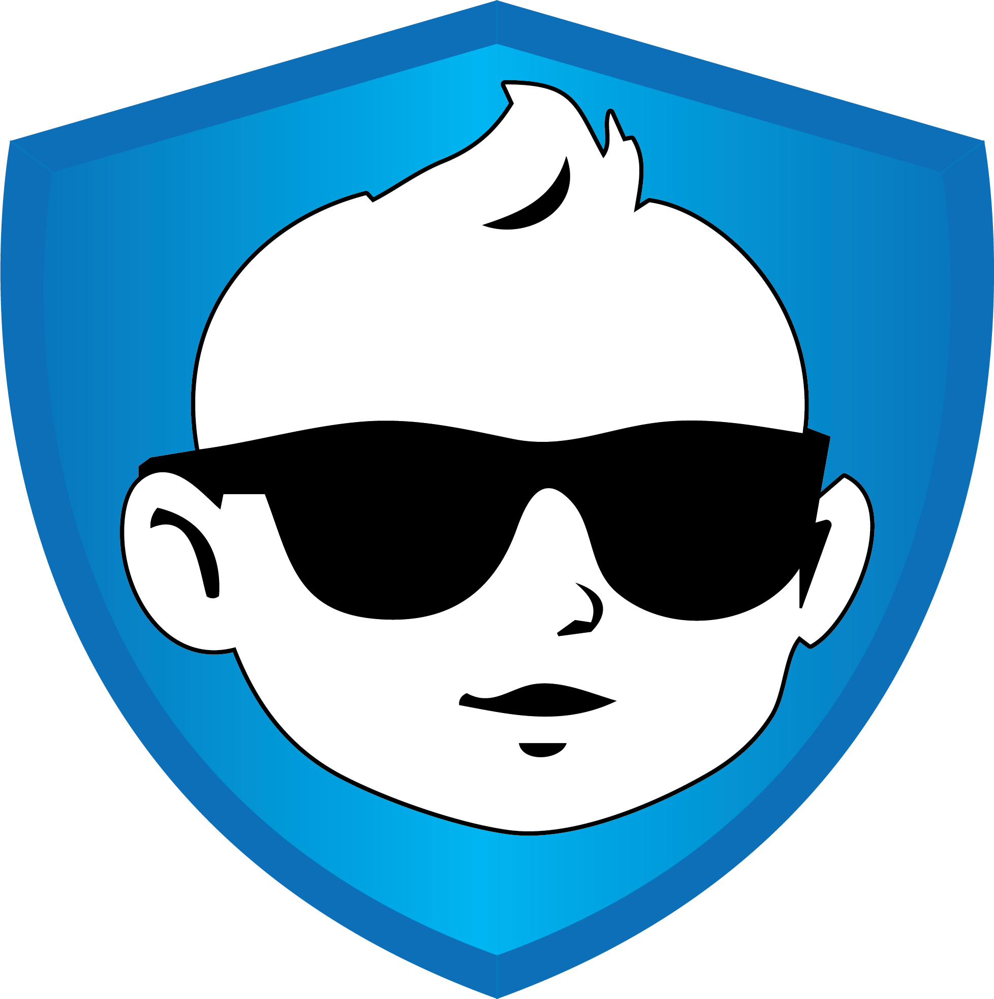

The First 72 Hours at Home
What to expect, what to ignore, and how to not lose your mind.
9 minDadPro takes one thing from you, your kid's birthday, and turns it into a briefing you get every week: the milestones that are live right now, one guide worth ten minutes, and one thing only you can do.
No account required. Set up your kid in under two minutes.

Hey, Dad. EmEvery developmental item comes from the CDC's "Learn the Signs. Act Early." checklists, which list what 75% or more of children can do by a given age. We kept the standard and rewrote the explanation for a guy who has never done this before. Then we added the milestones that are yours, not the baby's.
Turns toward you when you say the name. If they never respond to their name, bring it up at the visit.
CDC 9 monthsHands free to play.
CDC 9 monthsSpoon goes off the tray, eyes follow.
CDC 9 monthsSolo trip with the baby: store, park, coffee. Diaper bag packed by you.
Dad winTake the night shift solo. Get the car seat checked by a certified tech. Learn the difference between the four cries. Handle a tantrum without raising your voice. Those are not on anybody's clinical chart, and they are most of what being a dad actually is, so we track them next to the ones that are.
Check one off and it stays checked, and on their birthday the whole year comes back as a recap: everything they did, and everything you logged. Every Sunday you get the smaller version of the same thing. The app moves the list forward as your kid ages, so you are never scrolling past two years of stuff you already did.
Check a milestone off and DadPro builds a card you can send: what they did, exactly how old they were on the day, the date, and the photo you took. It's free, because a card like this belongs in the group chat rather than behind a paywall.
The milestone list uses the CDC's clinical wording, which is exactly right when you are ticking a box. It is wrong on something you send to your mother. So every one of the 281 has a second version written the way you would actually say it out loud.
Nothing is uploaded. The photo stays on your phone until you choose to send the card, and then it leaves as a picture you picked, to whoever you picked.
Not blog posts. Each one is a five to twelve minute read that ends with something to do, written in plain language and screened against primary medical sources before it ships. A few of them:
What to expect, what to ignore, and how to not lose your mind.
9 minWhy evenings melt down from 5 to 10pm, and the protocol that actually works.
6 minPeanut butter in at 6 months. The science, the schedule, and the script.
8 minThe crying when you leave isn't a problem. It's proof the bond worked.
10 minRough-and-tumble play builds the brain. The research on why wrestling counts.
10 minBefore, during, and after delivery, your real job.
9 minLater is better. Actually.
9 minHow to spot postpartum mood disorders in both parents, and what to do next.
7 minHonest beats scare tactics.
12 minMost tracking apps still show a single list and call it settled. That is no longer true in the United States, and pretending otherwise is not a service to anybody. So DadPro shows you both, for all 37 doses, and tells you where they differ.
Published by the American Academy of Pediatrics on February 5, 2026, and endorsed by twelve other medical organizations including the AAFP, ACOG, AMA, IDSA and NAPNAP. Roughly 28 states follow it.
The schedule CDC published on July 2, 2025. A January 2026 revision would have re-tiered several vaccines; a federal court stayed that revision on March 16, 2026, and the appeal is pending. The app shows what the revision would have changed.
For every dose you also get what the disease actually does, why the timing is what it is, the real side effect rates, and the sentence that matters most: decide with your pediatrician, because they know your child's history and a phone app does not.
Sources: AAP immunization schedule (Feb 5, 2026) · CDC child and adolescent schedule (Jul 2, 2025) · Congressional Research Service R48982 · AAP v. Kennedy, D. Mass. Verified September 12, 2026.
You just need to know what week it is. That part we can handle.
Requires iPhone with iOS 18 or later.